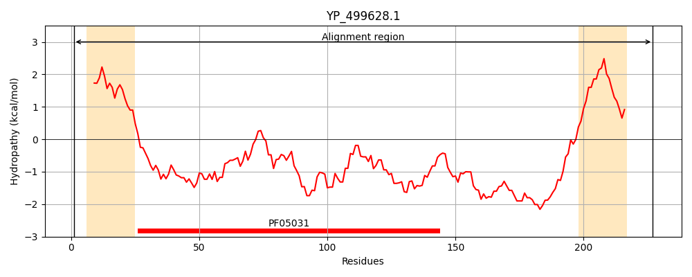
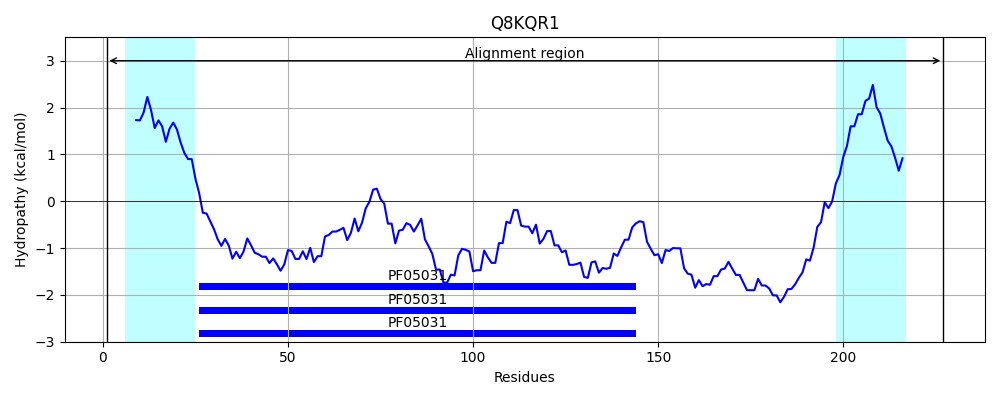
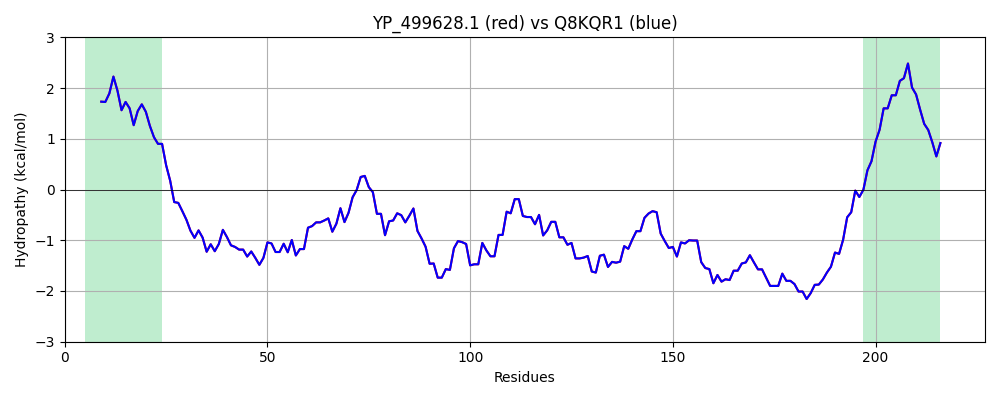

Hit Accession: Q8KQR1
Hit TCID: 3.A.1.14.28
Hit Description: gnl|BL_ORD_ID|16463 gnl|TC-DB|Q8KQR1|3.A.1.14.28 Iron-regulated surface determinant protein C - Staphylococcus aureus (strain NCTC 8325).
Mach Len: 227
e:0.000000
Query TMS Count : 2
Hit TMS Count: 2
TMS-Overlap Score: 2.000000
Predicted Substrates:None
BLAST Alignment:
Score: 1175 , Bit scores: 457 bits, E-value: 2.5e-166, Alignment length: 227, Percentage identity: 100
Query: 1 MKNILKVFNTTILALIIIIATFSNSANAADSGTLNYEVYKYNTNDTSIANDYFNKPAKYIKKNGKLYVQITVNHSHWITGMSIEGHKENIISKNTAKDERTSEFEVSKLNGKIDGKIDVYIDEKVNGKPFKYDHHYNITYKFNGPTDVAGANAPGKDDKNSASGSDKGSDGTTTGQSESNSSNKDKVENPQTNAGTPAYIYAIPVASLALLIAITLFVRKKSKGNVE 227
MKNILKVFNTTILALIIIIATFSNSANAADSGTLNYEVYKYNTNDTSIANDYFNKPAKYIKKNGKLYVQITVNHSHWITGMSIEGHKENIISKNTAKDERTSEFEVSKLNGKIDGKIDVYIDEKVNGKPFKYDHHYNITYKFNGPTDVAGANAPGKDDKNSASGSDKGSDGTTTGQSESNSSNKDKVENPQTNAGTPAYIYAIPVASLALLIAITLFVRKKSKGNVE
Sbjct: 1 MKNILKVFNTTILALIIIIATFSNSANAADSGTLNYEVYKYNTNDTSIANDYFNKPAKYIKKNGKLYVQITVNHSHWITGMSIEGHKENIISKNTAKDERTSEFEVSKLNGKIDGKIDVYIDEKVNGKPFKYDHHYNITYKFNGPTDVAGANAPGKDDKNSASGSDKGSDGTTTGQSESNSSNKDKVENPQTNAGTPAYIYAIPVASLALLIAITLFVRKKSKGNVE 227 | Protein Hydropathy Plots: |
|---|
|  |  |
Pairwise Alignment-Hydropathy Plot:
|
|---|
|  |